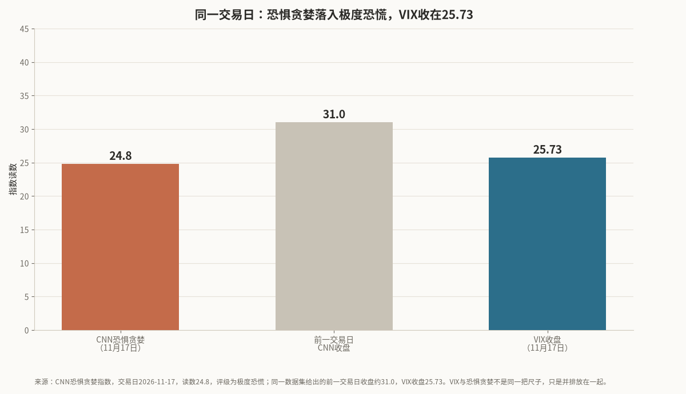
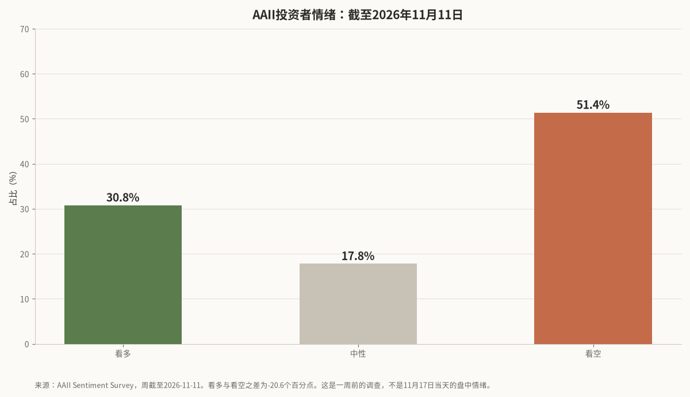

以前挤兑得去网点排队，现在说几分钟就可能发生：美联储为什么把AI agent写进银行风险
Kalshi转发称美联储警告，AI agent可能在数分钟内触发银行挤兑。同一窗口里，CNN恐惧贪婪指数落到24.8，进入极度恐慌，VIX收在25.73；韩国股市当天也出现大幅下跌的转述。
以前人们想象银行挤兑，眼前往往是一条队伍。储户赶到网点，窗口一扇一扇开，钱一笔一笔取。队伍本身就要花掉几个小时。
Kalshi在北京时间11月18日凌晨转发了一句更短的话：美联储警告，AI agent可能在数分钟内触发银行挤兑。
时间线里没有出现更接近原文的美联储帖子。能看见的，是这条转述，以及同一天已经很害怕的市场数字。
「几分钟挤兑」目前只是转述，还不能当成美联储原文；恐惧贪婪指数落到24.8、VIX收在25.73，则是已经公布的读数。
先把几个词说清楚
AI agent，这里指能按目标自动执行一连串操作的程序，比如监控新闻、比较价格、下指令。和聊天问答不同，它被写成会自己动手。
银行挤兑，是大量储户在短时间内把钱从银行取走或转走。传统挤兑受网点、柜台和转账限额限制；如果取款和转账改由自动程序发起，同样的指令可能压缩到更短的时间里完成。这是这条警告想指向的变化，不是当天已经发生了挤兑。
恐惧贪婪指数，是CNN把价格动量、涨跌家数、垃圾债需求、VIX等几个市场指标合成的一条情绪读数。0更靠近极端恐惧，100更靠近极端贪婪。11月17日的读数是24.8，CNN自己的评级是极度恐慌。
VIX，是市场给未来30天波动率开出的价格，常被叫作恐慌指数。它和恐惧贪婪不是同一把尺子，只是常常一起被拿来看风险偏好。这一天它收在25.73。
光模块，是数据中心里把电信号和光信号转来转去的小盒子，用来把服务器连成集群。有帖子称，美国政府要限制从中国进口这类人工智能数据中心设备。
这条警告现在只能读到转述
这条警告现在只能读到转述。Kalshi的原文很短：Fed warns AI agents could trigger bank runs in minutes。没有附上讲话场合、文件名称或段落出处。
在没有原帖可对的情况下，能确定的只有两件事。第一，这条消息是以预测市场账号转发的形式进入时间线的。第二，它讨论的是速度：以前挤兑要排很长的队，现在被形容成几分钟就可能发生。
⚠️ 美联储是否就此发表了正式警告、原话如何定义AI agent和银行挤兑，时间线里还没有可核对的原文。下面把这条警告当作转述来读，不再把它升格成已经落地的监管结论。
散户讨论里有人翻出地区银行ETF当天的收盘：KRE收在70.85美元，跌1.9%，并说「这看起来不像挤兑」。这只能说明，至少在那个收盘价上，市场没有把「银行正在被挤兑」做成普遍定价。它既不能证明警告是假的，也不能证明警告已经被当作即期事实。
同一天，恐慌读数已经先到了
把已经公布的数字放在一起看，会更清楚：这条警告出现时，风险偏好本来就低。

CNN恐惧贪婪指数在11月17日读数为24.8，评级为极度恐慌。同一数据集里，前一交易日的收盘大约是31.0，一天少了约6.2分。VIX收在25.73。按该指数过去两年的分位来看，这个收盘已经落在很高的位置，但分位计算是事后统计，正文只把它当作「波动率定价已经不便宜」的参考。
AAII的调查更早一点，周截至11月11日：看多30.8%，中性17.8%，看空51.4%，看多与看空相差负20.6个百分点。qinbafrank把当时美股的状态写成看空约51.5%、看多约30%，并说这已是过去一年半的高点，但仍低于去年关税战时的61.9%。他的取数和AAII官方数字非常接近，但不是同一天的盘中投票。

Ted还写了韩国股市：当天蒸发135.2万亿韩元，卖压还在继续。⚠️ 这是单一来源，未见交易所官方汇总被同时转载，正文保留他的原数字，不另外改写成美元。
Polymarket则转发称，Stanley Druckenmiller已经离开股市、专注保全资本，因为对未来一年「从未如此缺少清晰度」。⚠️ 未见其本人原帖。Peter Schiff把话说得更满：几乎所有资产都是泡沫，AI会是下一场更大危机里的次级债。这是判断，不是新的官方数据。
算一笔账：一天少了6.2分，意味着什么
下面只使用已经公布的恐惧贪婪指数，以及Ted写下的韩国股市数字。韩国数字仍按未核对处理。
第一步，先算恐惧贪婪指数的一日变化。前一交易日收盘约31.0，11月17日为24.8，相差约6.2分。这6.2分衡量的是一条综合情绪读数在一天里向下移动了多远，和账户盈亏不是同一回事。
第二步，看它落在哪一档。24.8被CNN标成极度恐慌。也就是说，市场给出的已经是这条指数常用评级里更靠下的一档。它不能告诉你明天会不会反弹，只能告诉你，这一天被记下来的情绪已经很瘦。
第三步，把VIX放在旁边，但不强行加总。25.73是波动率的价格，24.8是一条合成情绪。两件事可以同时偏怕，却不能加出「更怕了31分」这种没有单位的结论。
第四步，再看韩国股市那笔转述。135.2万亿韩元是一个很大的整数，而且被写成「一天之内」。没有可靠的当日汇率来源之前，不去把它改写成美元，以免凭空多出一个「精确」的对照。它要说明的是：恐慌当天不只出现在美国的情绪指数上，至少在一条被广泛转发的描述里，韩国股市也被写成大幅缩水。
第五步，回到那条「数分钟挤兑」的转述。如果有人把恐惧贪婪指数的下降，直接解释成美国银行正在被自动程序挤兑，证据是不够的。当天看得到的，是情绪读数变差，以及一条尚未核对原文的监管警告。地区银行ETF跌了，也还没有把「挤兑已经发生」写成收盘事实。
进口限制被写成另一条风险
同一窗口里，还有一条跟AI基础设施有关的贸易消息。Serenity写道：特朗普政府将推进限制从中国进口人工智能数据中心设备，例如新型光模块；超大规模云厂商反对，他认为这对西方光模块有利。
⚠️ 这是单一来源。正文只保留原帖里已经写明的方向：限制进口、云厂商不乐意、有人认为西方供应商会受益。它和「数分钟挤兑」不是同一件事，只是同一天被放进风险菜单里的另一条。
如果限制真的推进，短时间内更可能看到的，是建设数据中心的成本上升、供货变慢，而不是国内产能立刻补上缺口。这个推想来自讨论区里对产能爬坡速度的提醒，不是已经发生的价格。把它记在这里，是为了避免把贸易限制直接写成某一家公司的利好。
恐慌已经记在指数上，警告还只是转述
11月17日这天，市场给出的恐惧贪婪指数是24.8，VIX收在25.73，一周前的调查里看空也已经占到一半以上。这些读数不必再夸张。
真正还不能写死的，是那句「几分钟就可能发生挤兑」。它改变的是人们对速度的想象，可是在找到美联储原文、看到银行资金流出的核对数字之前，它仍然是一条转发。韩国股市的蒸发额、进口光模块的限制，同样需要各自的来源，不能被串成一个总开关。
如果后面出现可核对的正式文件，或者银行端真的出现异常的存款流出，这条警告的分量会立刻变重。如果两者都没有，它就还是停留在风险菜单上的一句话。
这对普通投资者意味着什么
先承认市场已经很怕，但不要把一条尚未核对的「数分钟挤兑」当成已经发生的挤兑。
做股票的人，更应该看的是已经公布的情绪和波动率有没有从极度恐慌里退出来，以及银行、软件和半导体这些被一起卖掉的板块，有没有自己的新消息。做加密或高杠杆的人，更需要记住：当情绪已经落在极低的位置，自动交易和强制平仓会把价格变化压缩到很短的时间里。把现金和杠杆留出余地，比争辩警告像不像真的，更靠得住。
几点说明
恐惧贪婪指数24.8、前一交易日收盘约31.0、VIX 25.73，均来自CNN恐惧贪婪数据集，交易日为2026年11月17日；约6.2分是两者相减。AAII数字截至11月11日，不是17日当天的调查。KRE收盘70.85美元、跌1.9%，来自一条散户回复，未做独立行情核对，只用来说明「收盘价还没有把挤兑写成既成事实」。135.2万亿韩元保持原文，不换算美元。「数分钟挤兑」和进口限制均为转述或单一来源，已在出现处标明。
免责声明：本文仅供信息参考，不构成任何投资建议。
X 上怎么看
结论 · 恐慌指数和波动率是已公布的市场数据；「数分钟挤兑」目前只看到预测市场账号的转述，还不能当成美联储原文。韩国股市蒸发额和进口限制也是单一来源或转发，适合并排阅读，不适合串成一条因果链。
▼ 看空7 位
● 分歧或中性1 位
观点为 X 用户当日公开帖子的中文摘要，忠于原文但有删减；标「未核实」的为预测、个人推测或单一来源说法。立场为人工判断。
数据来源
- 「美联储警告AI agent可能在数分钟内触发银行挤兑」来自Kalshi转发。采集窗口的时间线里没有找到更接近的美联储原帖，正文按转述处理。
- CNN恐惧贪婪指数24.8、评级极度恐慌、前一交易日收盘约31.0、VIX收盘25.73，来自2026-11-17的CNN恐惧贪婪数据集。约6.2分是24.8与约31.0相减。VIX与恐惧贪婪不是同一指标，只是并排放在一起。
- AAII看多30.8%、中性17.8%、看空51.4%、差值-20.6个百分点，周截至2026-11-11，不是17日当天的调查。
- 韩国股市蒸发135.2万亿韩元来自Ted，单一来源，正文不换算美元。
- Druckenmiller「已离开股市」来自Polymarket转述，未见其本人原帖。
- 限制进口中国人工智能数据中心设备（光模块）来自aleabitoreddit，单一来源。
- KRE收盘70.85美元、跌1.9%，来自一条散户回复，未做独立行情核对，只用它说明收盘价还没有把挤兑写成既成事实。
- https://x.com/Kalshi/status/2122783331255206367
- https://edition.cnn.com/markets/fear-and-greed
- https://www.aaii.com/sentimentsurvey
- https://x.com/TedPillows/status/2122601720278888558
- https://x.com/qinbafrank/status/2122724805468434866
- https://x.com/PeterSchiff/status/2122773002266058762
- https://x.com/Polymarket/status/2122759307586421019
- https://x.com/aleabitoreddit/status/2122660925488718046
- https://x.com/TraderS18/status/2122720055763095692
- https://x.com/MSX_CN/status/2122631120474997099